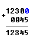

8086 assembler tutorial for beginners (part 1)
this tutorial is intended for those who are not familiar with assembler at all,
or have a very distant idea about it. of course if you have knowledge of some other
programming language (basic, c/c++, pascal...) that may help you a lot.
but even if you are familiar with assembler, it is still a good idea to look
through this document in order to study emu8086 syntax.
it is assumed that you have some knowledge about number representation (hex/bin),
if not it is highly recommended to study
numbering systems tutorial
before you proceed.
what is assembly language?
assembly language is a low level programming language.
you need to get some knowledge about computer structure
in order to understand anything.
the simple computer model as i see it:

the system bus (shown in yellow) connects the various components
of a computer.
the CPU is the heart of the computer, most of computations occur inside the CPU.
RAM is a place to where the programs are loaded in order to be executed.
inside the cpu

general purpose registers
8086 CPU has 8 general purpose registers, each register has its own name:
- AX - the accumulator register (divided into AH / AL).
- BX - the base address register (divided into BH / BL).
- CX - the count register (divided into CH / CL).
- DX - the data register (divided into DH / DL).
- SI - source index register.
- DI - destination index register.
- BP - base pointer.
- SP - stack pointer.
despite the name of a register, it's the programmer who determines
the usage for each general purpose register. the main purpose of a register is to
keep a number (variable). the size of the above registers is 16 bit, it's something
like: 0011000000111001b (in binary form), or 12345 in decimal (human) form.
4 general purpose registers (AX, BX, CX, DX) are made of two separate 8 bit
registers, for example if AX=
0011000000111001b,
then AH=00110000b
and AL=00111001b. therefore, when you modify any of the 8 bit
registers 16 bit register is also updated, and vice-versa. the same is for other 3 registers,
"H" is for high and "L" is for low part.
because registers are located inside the CPU,
they are much faster than memory. Accessing a memory location
requires the use of a system bus, so it takes much longer.
Accessing data in a register usually takes no time.
therefore, you should try to keep variables in the registers.
register sets are very small and most registers have special
purposes which limit their use as variables, but they
are still an excellent place to store temporary data of
calculations.
segment registers
- CS - points at the segment containing the current program.
- DS - generally points at segment where variables are defined.
- ES - extra segment register, it's up to a coder to define its usage.
- SS - points at the segment containing the stack.
although it is possible to store any data in the
segment registers, this is never a good idea.
the segment registers have a very special purpose
- pointing at accessible blocks of memory.
segment registers work together with general purpose register to access
any memory value. For example if we would like to access memory at the physical
address 12345h (hexadecimal), we should set the DS = 1230h and
SI = 0045h. This is good, since this way we can
access much more memory than with a single register that is limited to 16 bit values.
CPU makes a calculation of physical address by multiplying the segment register by 10h
and adding general purpose register to it (1230h * 10h + 45h = 12345h):

the address formed with 2 registers is called an effective address.
by default BX, SI and DI registers work with DS segment register;
BP and SP work with SS segment register.
other general purpose registers cannot form an effective address!
also, although BX can form an effective address, BH and BL cannot.
special purpose registers
- IP - the instruction pointer.
- flags register - determines the current state of the microprocessor.
IP register always works together with CS segment register and it points
to currently executing instruction.
flags register is modified automatically by CPU after mathematical operations,
this allows to determine the type of the result, and to determine conditions
to transfer control to other parts of the program.
generally you cannot access these registers directly, the way you can access AX and other general registers, but it is possible to change values of system registers using some tricks that you will learn a little bit later.
>>> Next Part >>>